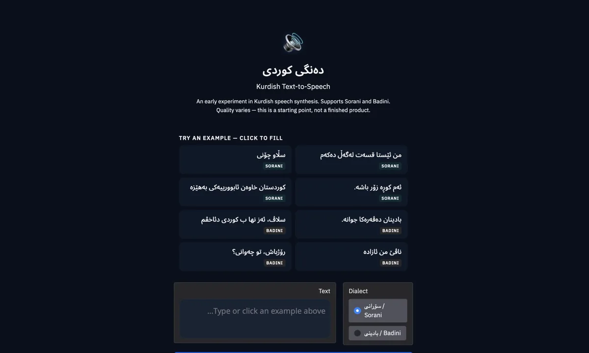
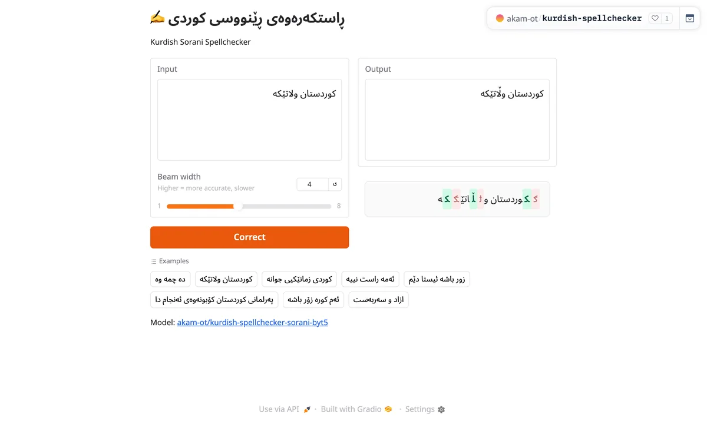
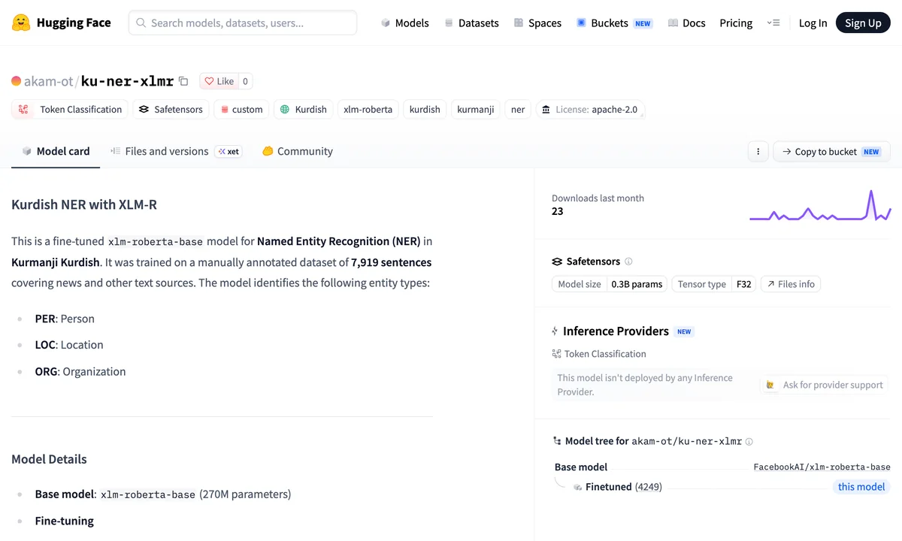
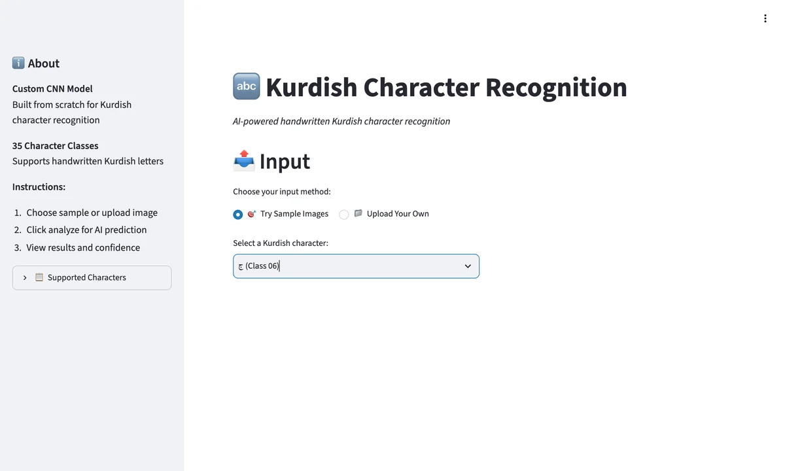
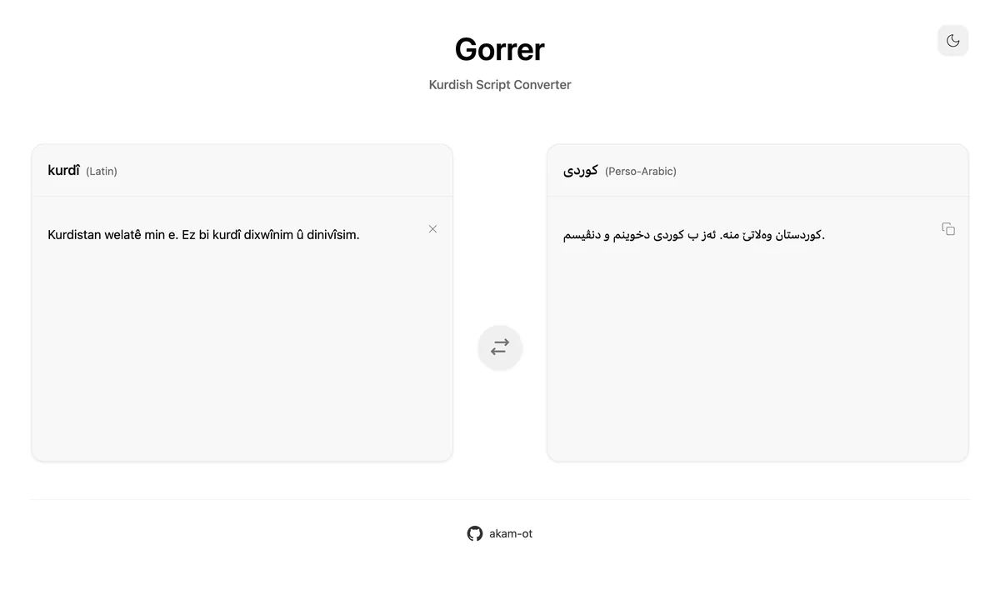
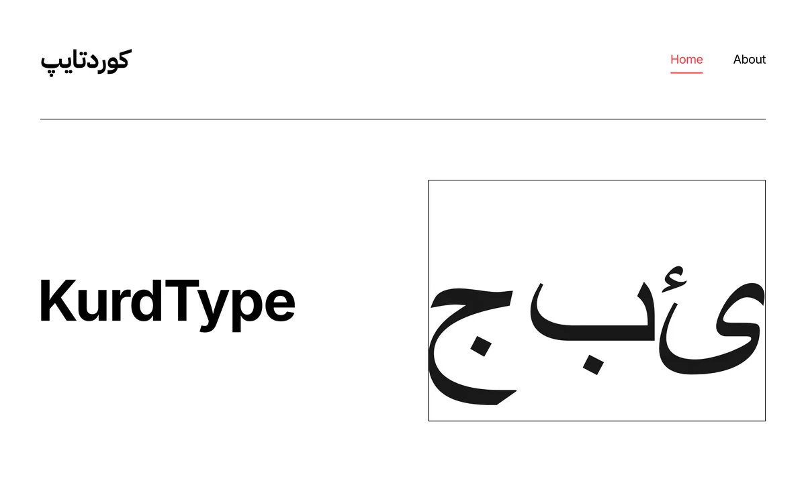

Kurdish Text-to-Speech
Speech synthesis for Sorani and Badini, built by fine-tuning Meta's MMS TTS. The Sorani model, trained on a curated 10-hour dataset, is the first open Sorani TTS model.
Live demoAI Developer @ Ovanya
Specializing in machine learning and natural language processing.
WiNLP 2026 at EMNLP 2026
3,272 multiple-choice questions across 18 subjects, combining native national-exam questions with questions translated from MMLU. I evaluated 32 language models: the best reach about 88% accuracy, and every model does better on translated than on native questions.
WiNLP 2025 at EMNLP 2025
My undergraduate thesis: an XLM-RoBERTa NER system for Kurmanji Kurdish, fine-tuned on 7,919 manually annotated sentences.

Speech synthesis for Sorani and Badini, built by fine-tuning Meta's MMS TTS. The Sorani model, trained on a curated 10-hour dataset, is the first open Sorani TTS model.
Live demo
A ByT5 model fine-tuned to correct misspelled Sorani sentences. Working at the byte level makes it robust to the character variation common in Kurdish text.
Live demo
The first public Kurmanji NER model and dataset, recognising people, locations and organisations with an F1 score of 0.87.
View model
A CNN written from scratch in NumPy, with manual convolution, im2col and backpropagation. It reaches 71.05% accuracy across 35 handwritten Kurdish characters.
Live demo
A transliterator that converts Kurdish text between the Latin and Arabic scripts.
Visit website
A curated collection of open-licensed fonts that support Kurdish, for designers and content creators.
Visit websiteMachine learning engineer focused on NLP and applied AI.
I work across the full machine-learning lifecycle: collecting and annotating data, training and evaluating models, and deploying them as services. Most of my work is on Kurdish, covering OCR, named entity recognition, spelling, speech and LLM evaluation.
Aug 2025 – present
Ovanya
Building OCR systems and datasets for Sorani Kurdish, including one of the first of their kind. I train and evaluate text-extraction models, write evaluation benchmarks, and deploy inference services with FastAPI.
Sept 2024 – Oct 2024
UKH AI & Innovation Centre
Collected and cleaned a 140K+ article Kurdish news corpus with scalable scraping pipelines, contributed to one of the first Kurdish spell-checking datasets, wrote annotation guidelines, and kept datasets versioned for reproducible research.
2021 – 2025
University of Kurdistan Hewlêr (UKH)
Graduated in the top 3 of my programme. My thesis on named entity recognition for Kurmanji Kurdish was published at WiNLP 2025.
2024
Ovanya
Intensive programme on machine-learning fundamentals and neural networks.
Working on Kurdish NLP, or need a hand with a machine-learning project? I'd be glad to hear from you.
akam.nawzad@ukh.edu.krd